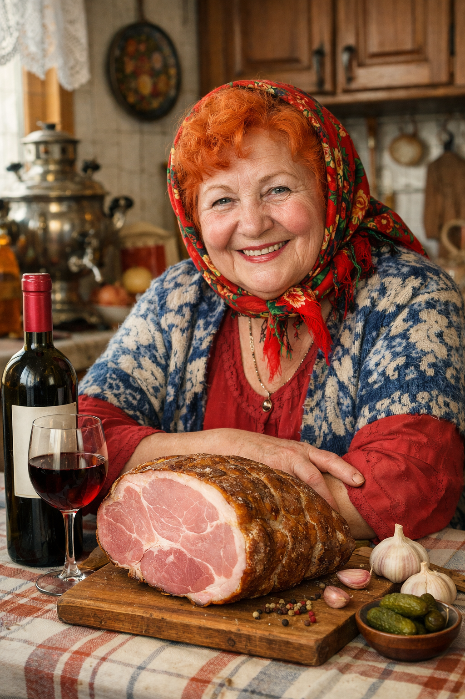
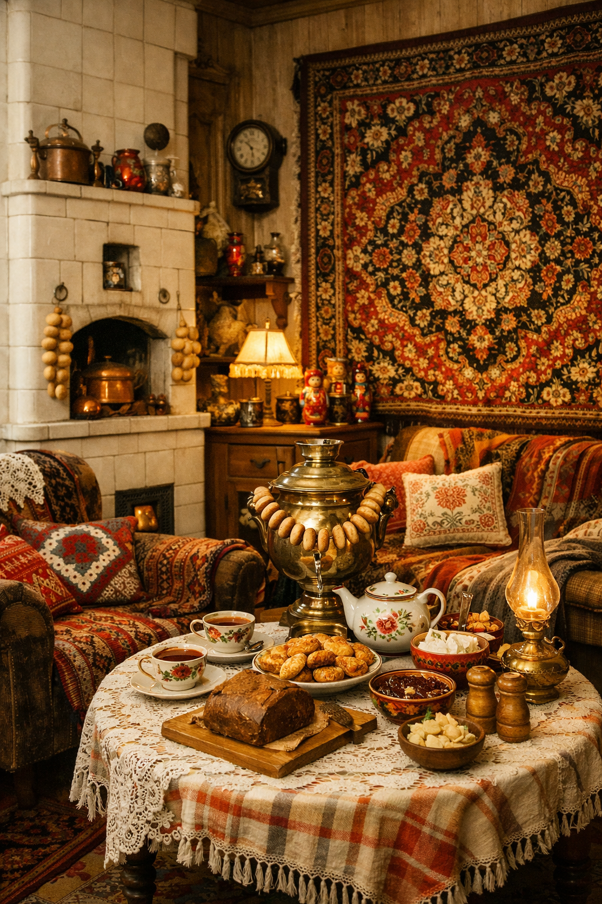
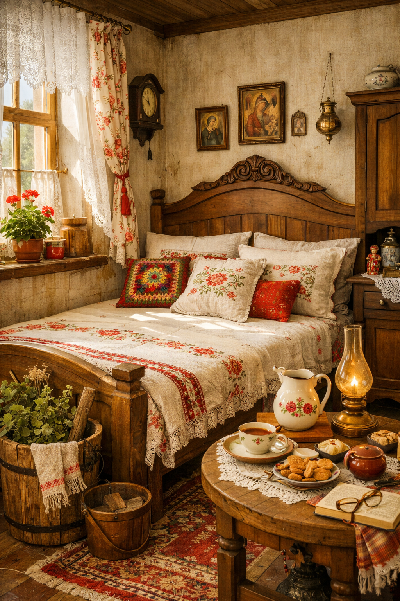
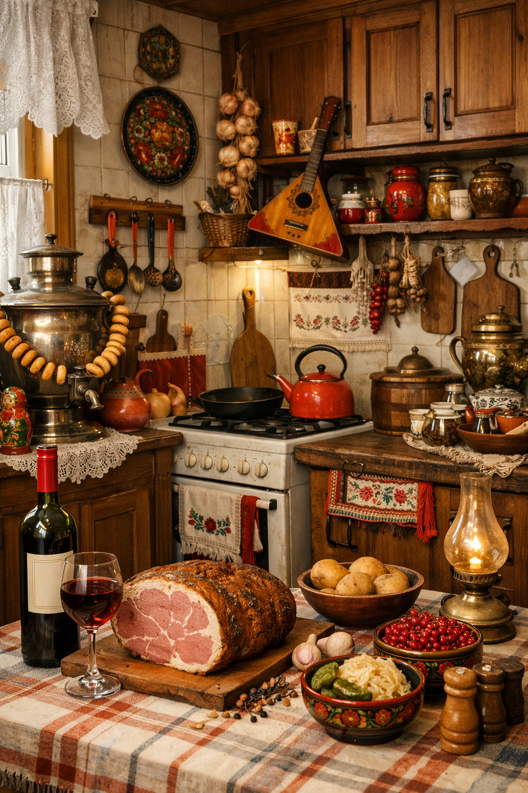
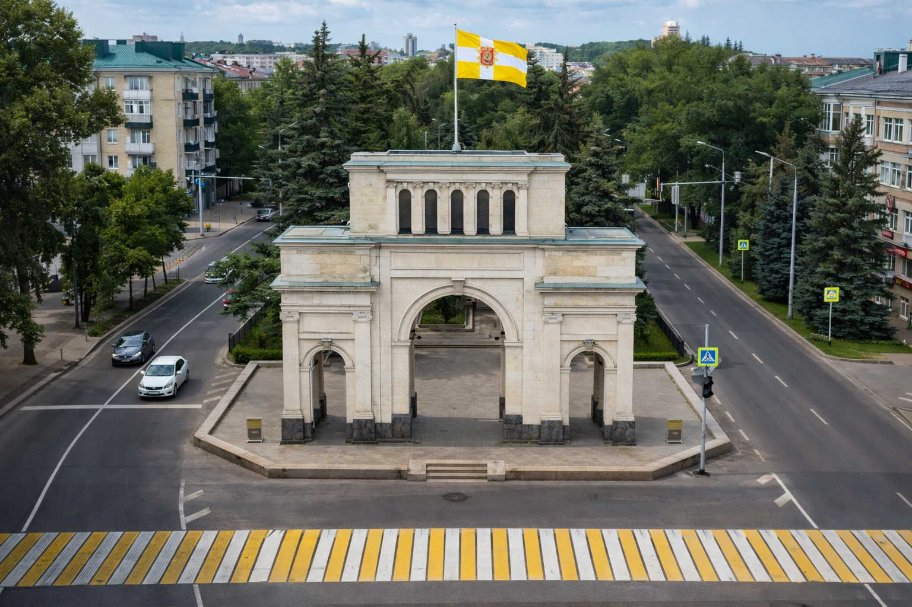
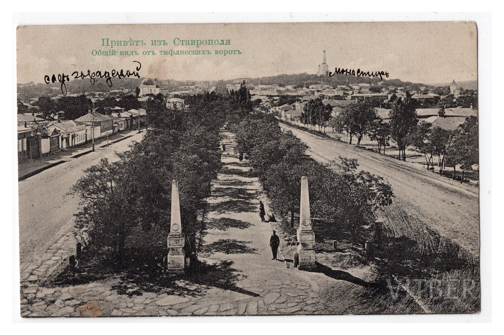

En este vídeo se muestran imágenes del centro de Stávropol, incluyendo la Puerta de Tilfis y el Ángel Guardián, acompañadas de música tradicional rusa.
Inicio
Descubre Stávropol
Donde el viento azota con fuerza pero los ciudadanos aguantan robustos como abedules, los niños sueñan y ríen sin cesar, donde caben miles de experiencias.
Preguntas Frecuentes
¿Dónde está ubicada Stavropol?
En el suroeste de Rusia, en la región del Cáucaso Norte.
¿Puedo visitar los lugares mostrados?
Esta web es ficticia, pero los lugares existen y son turísticos.
¿Cómo funciona el envío de postales?
El envío es simulado para fines educativos.
Lugares Emblemáticos

Парк Победы (Parque de la Victoria)
Uno de los parques más grandes y populares de la ciudad. Cuenta con monumentos históricos, áreas recreativas, atracciones, zoos, restaurantes, campos de fútbol e incluso con una zona de paintball.

Памятник солдату (Monumento de un Soldado)
Situado en la Plaza del Soldado, este imponente monumento rinde homenaje a los defensores de la ciudad en la Segunda Guerra Mundial. Es un punto de referencia clave en el centro histórico de Stávropol.

Комсомольский пруд (Estanque Komsomol)
Recientemente renovado, este estanque ofrece playas de arena blanca, instalaciones deportivas modernas y es el lugar favorito de los jóvenes al ser un espacio abierto y gratuito, perfecto para desconectar. Puedes llegar paseando, en bici o en coche, y siempre está disponible.

Статуя ангела (Estatua del ángel)
Representa al ángel guardián de la ciudad, una figura que simboliza protección, esperanza y la idea de que la ciudad está “custodiada desde lo alto”. Rodeada de jardines y zonas de paseo, se ha convertido en un punto de encuentro para locales y visitantes.
Eventos en Stávropol
Consulta todos los eventos en la aplicación oficial MyStavropol.


Alojamiento
En Stávropol encontrarás hoteles para todos los gustos, desde opciones económicas hasta alojamientos con encanto.
La casa de mi abuela (recomendación 100% real… o casi)
Si quieres vivir la experiencia más auténtica de Stávropol, siempre puedes alojarte en casa de mi abuela. Ella te recibirá con los brazos abiertos… si traes un buen jamón ibérico y vino español.

Foto de mi abuela en su casa de Stávropol.

Foto del salón de mi abuela en Stávropol.

Foto de la habitación de mi abuela en Stávropol.

Foto de la cocina de mi abuela en Stávropol.
Transporte
Taxi
Rápidos y... blindados. Si ves uno con forma de tanque, no preguntes, solo sube.
Fragoneta
La red de Marshrutkas conecta todos los puntos importantes de la ciudad.
Google Maps Ruso (2GIS)
Imprescindible para conocer todos los puntos relevantes de la ciudad.
Tranvía
Perfecto para recorrer el centro histórico con calma.
Tour Virtual por Stávropol
El video muestra vistas aéreas de Stávropol grabadas con un dron.
Ver transcripción del vídeo
Visión 360 grados
Este tour virtual permite explorar visualmente la plaza central de Stávropol (donde está la estatua del ángel) y sus monumentos circundantes.
Stávropol: Antes y Ahora
Comparación visual de la Puerta de Tilfis. La imagen antigua muestra la estructura original de piedra a principios del siglo XX, mientras que la imagen actual muestra la reconstrucción moderna con su entorno ajardinado actual.

